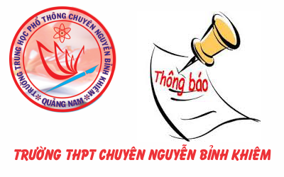

Lịch kiểm tra học kỳ I năm học 2013-2014

Lần cập nhật cuối lúc Thứ hai, 14 Tháng 12 2015 13:37 Viết bởi Administrator Chủ nhật, 08 Tháng 12 2013 14:43
Thực hiện chỉ đạo của Sở GD&ĐT tỉnh Quảng Nam, trường THPT chuyên Nguyễn Bỉnh Khiêm tổ chức thi kiểm tra học kỳ I năm học 2013 - 2014 như sau:
- Khối 12: Môn Công dân, Tin , TD, QP kiểm tra theo TKB trước 22/12.
- Khối 11, 10: Tin, TD, QP kiểm tra theo TKB trước 22/12.

LỊCH KIỂM TRA HỌC KỲ I NĂM HỌC 2013 - 2014
|
|||||||||||||||||||||||||||||||||||||||||||||||||||||||||||||||||||||||||||||||||||||||||||||||
Tin mới hơn:
- 13/11/2014 07:42 - Trường THPT chuyên Nguyễn Bỉnh Khiêm - Quảng Nam t…
- 30/10/2014 10:32 - Đại hội Đoàn trường THPT chuyên Nguyễn Bỉnh Khiêm …
- 05/09/2014 00:00 - Trường THPT chuyên Nguyễn Bỉnh Khiêm tổ chức lễ kh…
- 15/03/2014 08:05 - Kết quả chung kết hùng biện Tiếng Anh tại trường T…
- 24/01/2014 11:42 - Kết quả kỳ thi học sinh giỏi quốc gia năm học 2014
Tin cũ hơn:
- 05/12/2013 14:51 - Tổng hợp một số chuyên đề các môn chuyên của các t…
- 18/10/2013 09:26 - Đại hội đại biểu Đoàn TNCS Hồ Chí Minh trường THPT…
- 09/10/2013 13:58 - Kết quả thi chọn học sinh giỏi lớp 12 năm 2013-201…
- 22/08/2013 09:28 - Giao lưu cho những ngày sau
- 22/08/2013 09:16 - Lộc và những lựa chọn